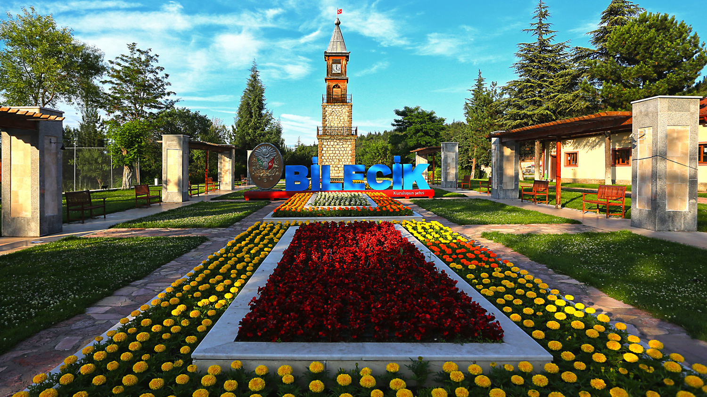
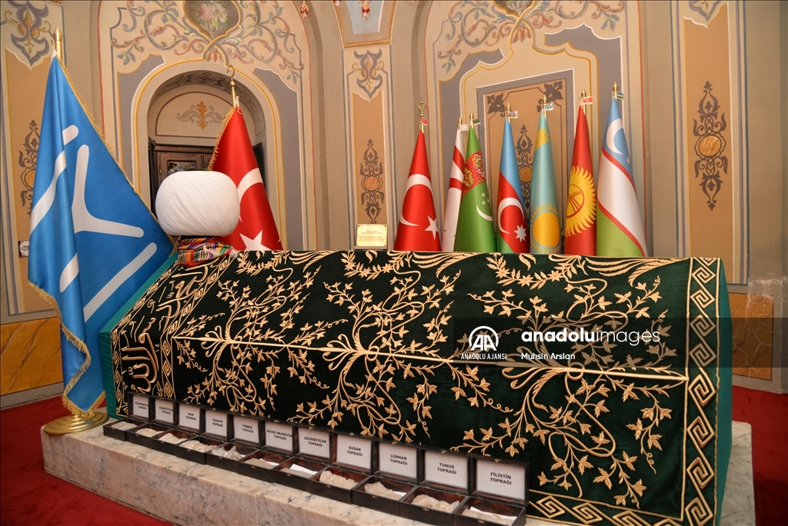
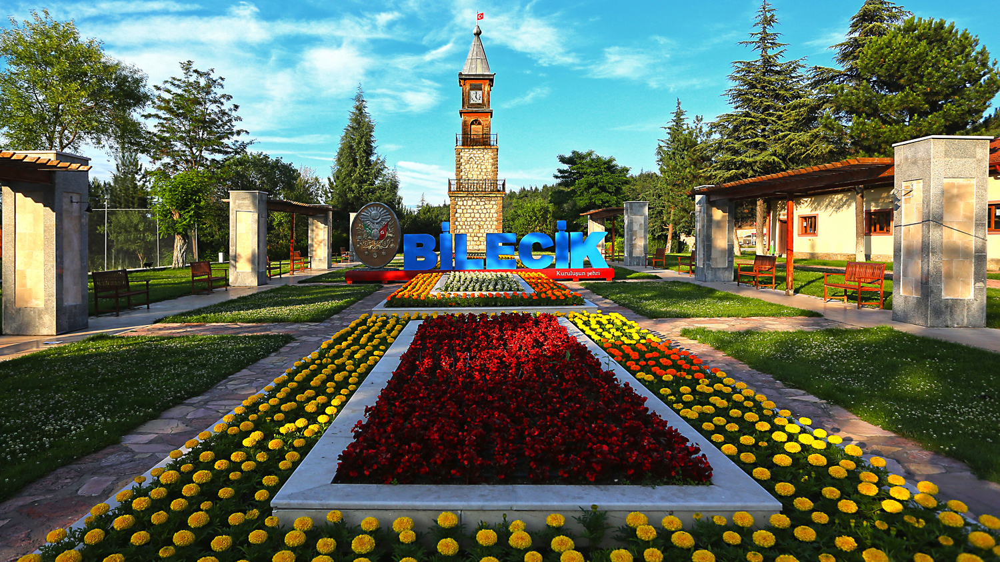
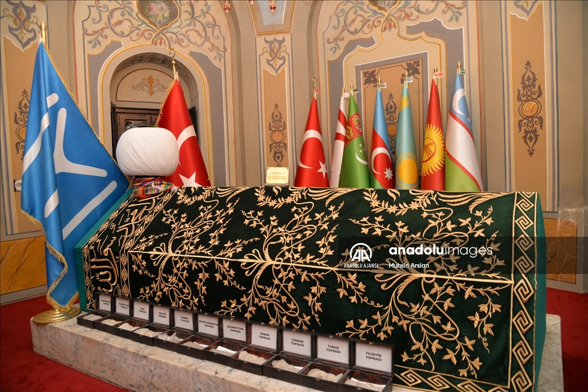

Bilecik Hakkında
Bilecik, Osmanlı Devleti'nin doğduğu topraklar olarak bilinir. Tarihi yerleri ve doğal güzellikleriyle dikkat çeker, ziyaretçilerine geçmişin izlerini sunar.
Ziyaret Edilmesi Gereken Yerler:
- Ertuğrul Gazi Türbesi: Osmanlı'nın kurucusu Osman Gazi'nin babası Ertuğrul Gazi'nin mezarıdır.
- Şeyh Edebali Türbesi: Osmanlı'nın ilk şeyhlerinden biri olan Şeyh Edebali'nin türbesi, tarihî öneme sahiptir.
- Söğüt: Osmanlı Devleti'nin temellerinin atıldığı tarihi köy, büyük öneme sahiptir.